3.2 Wahrscheinlichkeiten und Baumdiagramme
Wie du wahrscheinlich schon bemerkt hast, können an den Zweigen des Baumes auch Zahlen notiert werden.

Dabei handelt es sich um die Wahrscheinlichkeit, mit der das jeweilige Teilergebnis zu erwarten ist. Die Wahrscheinlichkeit muss also schon bekannt sein. Ob du sie mit Hilfe des empirischen Gesetzes der großen Zahlen (also durch viele Wiederholungen eines Zufallsexperiments) herausgefunden hast oder sie Ergebnis einer theoretischen Überlegung ist (Laplace-Experiment), ist natürlich egal.
Im Beispiel des Münzwurfs sind die Teilergebnisse “Kopf” oder “Zahl” mit einer Wahrscheinlichkeit von \(\frac{1}{2}\) möglich. Dies gilt sowol für den ersten, als auch für den zweiten Münzwurf.
3.2.1 Produktregel
Wie ermittelt man nun die Wahrscheinlichkeit der zusammengesetzten Ergebnisse?
Betrachte noch einmal das Baumdiagramm für den zweifachen Münzwurf:
Zu jedem der vier zusammengesetzten Ergebnisse (\(\{KK,\; KZ,\; ZK,\; ZZ\}\)), gehört ein Pfad - die Stufen des Pfades sind dabei die einzelnen Teilergebnisse.
Wie hoch ist also die Wahrscheinlichkeit dafür, zweimal “Kopf” zu werfen? Der Pfad, der zu dem Ergebnis zweimal Kopf gehört, ist blau gefärbt. Bei jedem der beiden Würfe ist das Teilergebnis “Kopf” mit einer Wahrscheinlichkeit von \(\frac{1}{2}\) möglich. Die Wahrscheinlichkeit für das Ergebnis “Kopf-Kopf” (KK) ist also \(\frac{1}{2}\) von \(\frac{1}{2}\) und damit \(\frac{1}{2}\cdot\frac{1}{2}=\frac{1}{4}\).
Kurz und knapp fasst diese Überlegung die Produktregel oder auch Pfadmultiplikationsregel zusammen:
Produktregel:
Die Wahrscheinlichkeit für ein zusammengesetztes Ergebnis erhält man, indem man die einzelnen Wahrscheinlichkeiten entlang des zugehörigen Pfades multipliziert.
Natürlich gilt auch für mehrstufige Zufallsexperimente, dass sich die Wahrscheinlichkeiten aller zusammengesetzten Ergebnisse zu 1 (zu 100%) addieren.
Beispiel
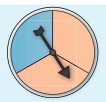
Das Glücksrad wird zweimal gedreht. Ermittle die Wahrscheinlichkeit, dass es zweimal bei Rot stehen bleibt. Erstelle dazu ein Baumdiagramm.
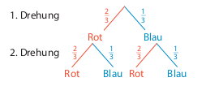
Der Pfad ganz links stellt das Ergebnis “Rot-Rot” dar. Die Wahrscheinlichkeit für die Farbe Rot beträgt in jeder Drehung \(\frac{2}{3}\).
Nun multipliziert man die Einzelwahrscheinlichkeiten entlang des Pfades ganz links (das ist ja der Pfad, der zu “Rot-Rot” führt, erhält man die Wahrscheinlichkeit für “Rot-Rot” (RR).
\(P(RR)=\frac{2}{3}\cdot\frac{2}{3}=\frac{4}{9}\)
Aufgabe 1
Das Glücksrad wird zweimal gedreht.
- Zeichne das zugehörige Baumdiagramm und notiere die Wahrscheinlichkeiten an den Zweigen.
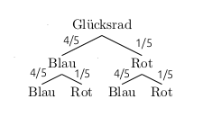
- Welche zusammengesetzten Ergebnisse sind möglich? Bestimme zudem jeweils die Wahrscheinlichkeit.
Folgende zusammengesetzte Ergebnisse sind möglich: \(\{Blau\;Blau,\; Blau\;Rot,\; Rot\;Blau,\; Rot\;Rot\}\)
Zu diesen gehören jeweils die folgenden Wahrscheinlichkeiten:
\(P(Blau\;Blau)= \frac{4}{5}\cdot\frac{4}{5}=\frac{16}{25}= 0,64\)
\(P(Blau\;Rot)= \frac{4}{5}\cdot\frac{1}{5}=\frac{4}{25}=0,16\)
\(P(Rot\;Blau)= \frac{1}{5}\cdot\frac{4}{5}=\frac{4}{25}=0,16\)
\(P(Rot\;Rot)= \frac{1}{5}\cdot\frac{1}{5}=\frac{1}{25}= 0,04\)
- Kontrolliere deine Überlegungen: Ergibt die Summe der Wahrscheinlichkeiten der zusammengesetzten Ergebnisse 1 (100%)?
Ja, die Summe der Wahrscheinlichkeiten der zusammengesetzten Ergebnisse ergibt 1:
\[\begin{align} &P(Blau\;Blau) + P(Blau\;Rot) + P(Rot\;Blau)+ P(Rot\;Rot) = \\ =\; &0,64 + 0,16 + 0,16 + 0,04 = 1\end{align}\]
Aufgabe 2
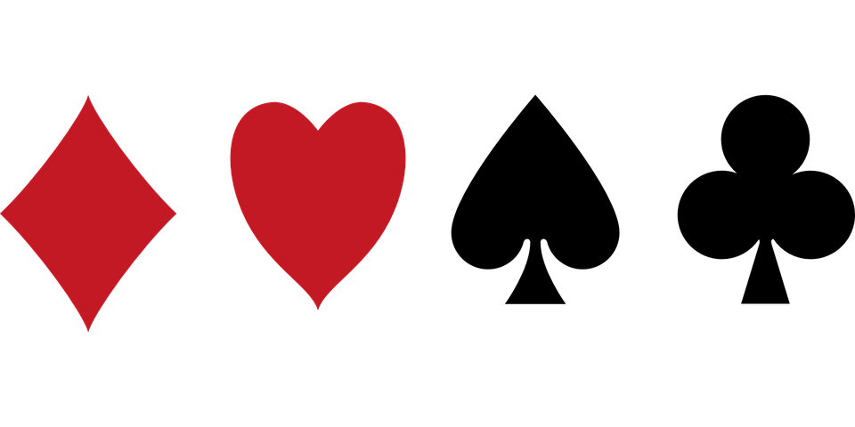
Jim spielt mit Lukas Karten. Lukas hat acht Karten auf der Hand: je zwei Karten von jeder Farbe (also zweimal Herz, zweimal Pik, zweimal Karo und zweimal Kreuz). Jim darf nun sein Glück versuchen, er gewinnt, wenn er zweimal hintereinander Karo zieht.
Er zieht blind eine Karte, notiert das Ergebnis und gibt die Karte zurück. Lukas mischt seine Karten und Jim hat noch einen Versuch, blind eine Karte zu ziehen.
- Erkläre, was das Ergebnis “Herz - Karo” bedeutet.
Das Ergebnis “Herz-Karo” bedeutet, dass Jim im ersten Versuch eine Herz- und im zweiten Versuch eine Karo-Karte zieht.
- Zeichne ein Baumdiagramm und trage die Wahrscheinlichkeiten ein. Markiere den/die Pfad(e), die zu Gewinnen führen.
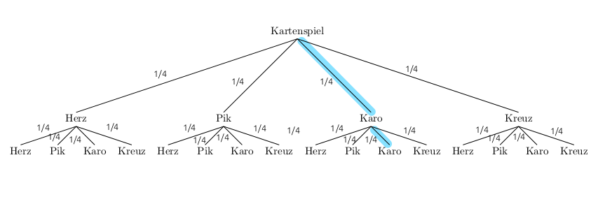
- Nenne alle möglichen Ergebnisse und berechne ihre Wahrscheinlichkeiten.
Folgende 16 Ergebnisse sind möglich:
\(\{HH,\; HP,\; HKa,\;HKr,\;PH,\;PP,\;PKa,\;PKr,\;KaH,\;KaP,\;\;KaKa,\;KaKr,\;KrH,\;KrP,\;KrKa,\;KrKr\}\)
Alle 16 Ergebnisse haben dieselbe Wahrscheinlichkeit, nämlich \(\frac{1}{4}\cdot\frac{1}{4}=\frac{1}{16}=0,0625\).
Aufgabe 3
Charlotte spielt Basketball. Sie trifft den Korb beim Basketballfreiwurf mit einer Wahrscheinlichkeit von 0,6 und darf dreimal werfen.
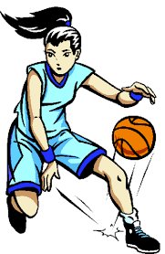
- Zeichne ein Baumdiagramm mit Wahrscheinlichkeiten.
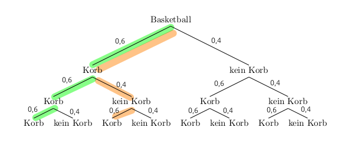
- Berechne die Wahrscheinlichkeit, dass Charlotte dreimal trifft.
Der zu diesem Ergebnis gehörende Pfad ist grün markiert. Multipliziert man die Wahrscheinlichkeiten entlang des Pfades, ergibt sich:
\(P(Korb\;Korb\;Korb)=0,6\cdot0,6\cdot0,6=0,216\)
Charlotte trifft also mit einer Wahrscheinlichkeit von 21,6% dreimal.
- Berechne die Wahrscheinlichkeit für das Ergebnis “Korb - kein Korb - Korb”.
Der zu diesem Ergebnis gehörende Pfad ist orange markiert. Multipliziert man die Wahrscheinlichkeiten entlang des Pfades, ergibt sich:
\(P(Korb\;kein\;Korb\;Korb)=0,6\cdot0,4\cdot0,6=0,144\)
Die Abfolge “Korb, kein Korb, Korb” hat also eine Wahrscheinlichkeit von 14,4%.
Aufgabe 4
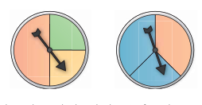
Die beiden Glücksräder werden gleichzeitig gedreht.
- Zeichne ein Baumdiagramm, in dem das linke Glücksrad auf der ersten und das rechte Glücksrad auf der zweiten Stufe ist. Trage die Wahrscheinlichkeiten ein.
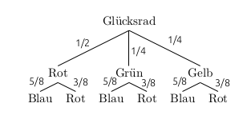
- Zeichne ein Baumdiagramm, in dem das rechte Glücksrad auf der ersten und das linke Glücksrad auf der zweiten Stufe ist. Trage die Wahrscheinlichkeiten ein.
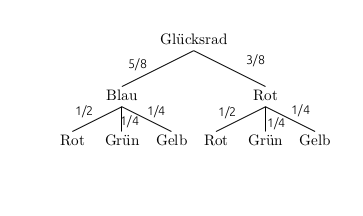
- Berechne die Wahrschinlichkeit dafür, dass beide Glücksräder Rot zeigen. Verwende einmal das Baumdiagramm aus Teilaufgabe a) und einmal das aus Teilaufgabe b). Vergleiche die Ergebnisse.
- Mit dem Baumdiagramm aus Teilaufgabe a) ergibt sich:
\[P(Rot\;Rot)=\frac{1}{2}\cdot\frac{3}{8}=\frac{3}{16}=0,1875\]
- Mit dem Baumdiagramm aus Teilaufgabe b) ergibt sich:
\[P(Rot\;Rot)=\frac{3}{8}\cdot\frac{1}{2}=\frac{3}{16}=0,1875\]
Die Wahrscheinlichkeit, dass beide Glücksräder auf dem roten Sektor stehen bleiben, ist also 18,75%.
Dass die Wahrscheinlichkeit unabhängig davon ist, welches Glücksrad man auf welcher Stufe im Baumdiagramm einträgt, ist verständlich, wenn man sich daran erinnert, dass man die Faktoren bei einer Multiplikation vertauschen darf.
3.2.2 Summenregel
Wirft man zwei Münzen gleichzeitig - oder eine Münze zweimal - gibt es zwei Möglichkeiten einmal “Kopf” und einmal “Zahl” zu erhalten. Entweder die erste Münze (der erste Wurf) zeigt “Kopf” und die zweite Münze (der zweite Wurf) zeigt “Zahl” oder umgekehrt. Das Ereignis “einmal Kopf und einmal Zahl” besteht also aus zwei Ergebnissen.
Entsprechend gibt es zum Ereignis “einmal Kopf und einmal Zahl” auch zwei Pfade im Baumdiagramm. Und auch wenn es langsam langweilig wird - betrachte hierfür doch bitte nochmal das Baumdiagramm für den zweifachen Münzwurf:
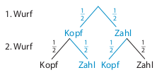
Die Wahrscheinlichkeit dafür “einmal Kopf und einmal Zahl” zu werfen ergibt sich nun als die Summe der Wahrscheinlichkeiten der zum Ereignis gehörenden Pfade. Hier:
\[\begin{align} P(einmal\;Kopf\;und\;einmal\;Zahl) &= P(KZ) + P(ZK) =\\ {}\\ &= \frac{1}{2} \cdot \frac{1}{2} + \frac{1}{2} \cdot \frac{1}{2} =\\ {}\\ &= \frac{1}{4} + \frac{1}{4} = \frac{1}{2} \end{align}\]
Natürlich kann ein Ereignis auch aus mehr als zwei Ergebnissen bestehen.
Kurz und knapp fasst diese Überlegung die Summenregel oder auch Pfadadditionsregel zusammen:
Summenregel:
Die Wahrscheinlichkeit für ein Ereignis erhält man, indem man die Wahrscheinlichkeiten der zugehörigen Pfade addiert.
Beispiel
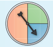
Das Glücksrad wird zweimal gedreht. Berechne die Wahrscheinlichkeit, dass man zweimal die gleiche Farbe erhält.
Zunächst zeichnet man ein Baumdiagramm zu diesem Versuch.
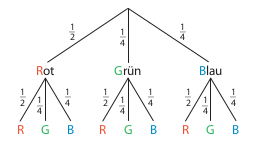
Das Ereignis “zweimal die gleiche Farbe” besteht aus drei Ergebnissen: “Rot-Rot”, “Grün-Grün” und “Blau-Blau”.
Nun berechnet man die Wahrscheinlichkeiten für die einzelnen Pfade, die zum Ereignis gehören, und addiert sie dann:
\[\begin{align} P(zweimal\;dieselbe\;Farbe) &= P(R,\;R)+P(G,\;G)+P(B,\;B) =\\ {}\\ & = \frac{1}{2} \cdot \frac{1}{2} + \frac{1}{4} \cdot \frac{1}{4} + \frac{1}{4} \cdot \frac{1}{4} = \\ {}\\ &= \frac{1}{4} + \frac{1}{16} + \frac{1}{16} = \frac{3}{8} = 37,5\% \end{align}\]
Aufgabe 1
Folgendes Glücksrad wird dreimal gedreht:
- Zeichne ein Baumdiagramm, das zu diesem Zufallsexperiment passt.
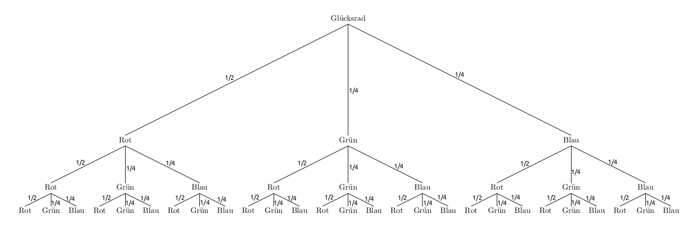
- Notiere jeweils alle Ergebnisse, die zu den Ereignissen gehören:
- beim 1. und 2. Drehen Rot, beim 3. Drehen eine andere Farbe
- dreimal Blau
- drei verschiedene Farben
- insgesamt genau zweimal Grün
“Insgesamt zweimal Blau und einmal Grün” besteht aus den Ergebnissen “Blau-BlauGrün”, “Blau-Grün-Blau” und “Grün-Blau-Blau”.
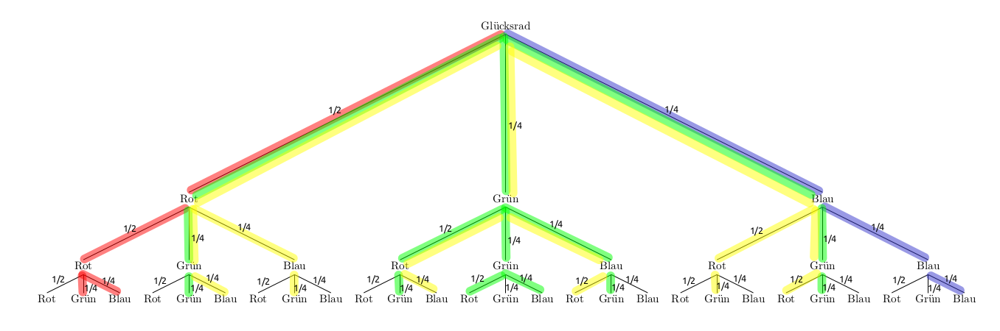
- Rot: beim 1. und 2. Drehen Rot, beim 3. Drehen eine andere Farbe: \(E_1=\{RRG,\;RRB\}\)
- Blau: dreimal Blau: \(E_2=\{BBB\}\)
- Gelb: drei verschiedene Farben: \(E_3=\{RGB,\; RBG,\;GRB,\;GBR,\;BRG,\;BGR\}\)
- Grün: insgesamt genau zweimal Grün: \(E_4=\{RGG,\; GRG,\;GGR,\;GGB,\;GBG,\;BGG\}\)
- Berechne die Wahrscheinlichkeit für jeden der Fälle aus Teilaufgabe b).
\(P(E_1)= \frac{1}{2}\cdot\frac{1}{2}\cdot\frac{1}{4}+\frac{1}{2}\cdot\frac{1}{2}\cdot\frac{1}{4}=\frac{1}{8}=0,125=12,5\%\)
\(P(E_2)=\frac{1}{4}\cdot\frac{1}{4}\cdot\frac{1}{4}=\frac{1}{64}=0,015625\approx 1,6\%\)
\(P(E_3)=6\cdot\frac{1}{2}\cdot\frac{1}{4}\cdot\frac{1}{4}=\frac{6}{32}=0,1875=18,75\%\)
\(P(E_4)=3\cdot\frac{1}{2}\cdot\frac{1}{4}\cdot\frac{1}{4} +3\cdot\frac{1}{4}\cdot\frac{1}{4}\cdot\frac{1}{4} = \frac{3}{32}+\frac{3}{64}=\frac{9}{64}=0,140625\approx 14,1\%\)
Aufgabe 2
Die Wahrscheinlichkeit dafür, dass ein noch ungeborenes Kind ein Junge ist, beträgt 51,3%. Berechne die Wahrscheinlichkeit dafür, dass eine Familie mit drei Kindern …
- … genau einen Sohn hat.
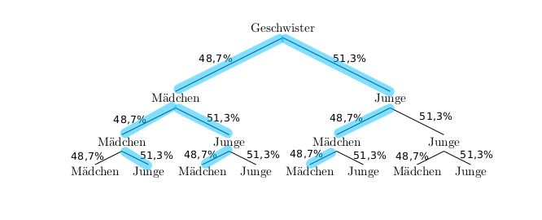
Das Ereignis “bei 3 Kindern genau ein Sohn” enthält drei Ergebnisse: \(E=\{MMJ,\;MJM,\;JMM\}\)
Die Wahrscheinlichkeit für dieses Ereignis beträgt:
\[\begin{align}P(E)&=0,487\cdot0,487\cdot0,513+0,487\cdot0,513\cdot0,487+0,513\cdot0,487\cdot0,487=\\ &=3\cdot0,487\cdot0,487\cdot0,513\approx 0,365\end{align}\]
Die Wahrscheinlichkeit dafür, dass eine Familie mit drei Kindern genau einen Sohn hat, beträgt also 36,5%.
- … mindestens zwei Söhne hat.
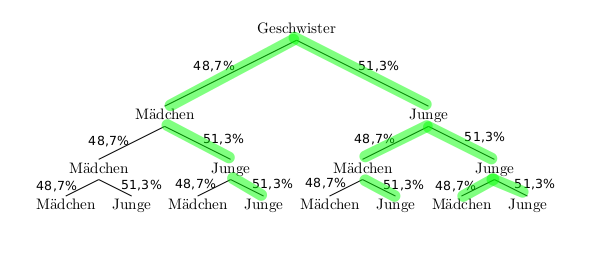
Das Ereignis “bei 3 Kindern mindestens zwei Söhne” enthält vier Ergebnisse: \(E=\{MJJ,\;JMJ,\;JJM\;JJJ\}\)
Die Wahrscheinlichkeit für dieses Ereignis beträgt:
\[\begin{align}P(E)&=0,487\cdot0,513\cdot0,513+0,513\cdot0,487\cdot0,513+0,513\cdot0,513\cdot0,487+0,513\cdot0,513\cdot0,513=\\ &=3\cdot0,487\cdot0,513\cdot0,513 + 0,513^3\approx 0,52\end{align}\]
Die Wahrscheinlichkeit dafür, dass eine Familie mit drei Kindern mindestens zwei Söhne hat, beträgt also etwa 52%.
Aufgabe 3
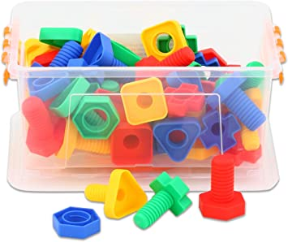
Ennos Spiel-Werkzeugkiste ist voller Plastikschrauben: 20 mit einem Durchmesser von 6mm, 40 mit einem Durchmesser von 8mm und 60 mit einem Durchmesser von 10 mm. Unter dem Bett bewahrt er eine zweite Kiste auf, in der sich passende Muttern befinden. Zu jeder Sorte Schrauben gibt es die gleiche Anzahl an passenden Muttern.
Enno entnimmt zufällig eine Schraube und eine Mutter. Berechne die Wahrscheinlichkeit, mit der beide zusammenpassen.
Ennos Spiel-Werkzeugkiste enthält 20 Schrauben (Muttern) mit einem Durchmesser von 6mm, 40 mit einem Durchmesser von 8mm und 60 mit einem Durchmesser von 10 mm.
Damit enthalten die Kisten insgesamt jeweils 20+40+60=120 Teile. Eine Schraube (Mutter aus der anderen Kiste) mit einem Durchmesser von 6mm zieht Enno also mit einer Wahrscheinlichkeit von \(\frac{20}{120}=\frac{1}{6}\).
Ebenso gilt: Eine Schraube (Mutter aus der anderen Kiste) mit einem Durchmesser von 8mm zieht er mit einer Wahrscheinlichkeit von \(\frac{40}{120}=\frac{1}{3}\) und eine Schraube (Mutter aus der anderen Kiste) mit einem Durchmesser von 10mm zieht er mit einer Wahrscheinlichkeit von \(\frac{60}{120}=\frac{1}{2}\).
Notiert man die Ziehung der Schrauben in der ersten Stufe des Baumdiagrammes und die Ziehung der Muttern in der zweiten Stufe, ergibt sich mit obigen Wahrscheinlichkeiten folgendes Baumdiagramm:
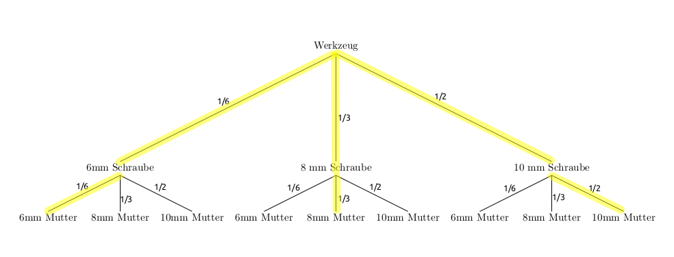
Das Ereignis, dass die beiden zusammenpassen enthält drei Ergebnisse - die zugehörigen Pfade sind gelb markiert.
Die Wahrscheinlichkeit für dieses Ereignis berechnet man nun wie folgt:
\(P(passt)=\frac{1}{6}\cdot\frac{1}{6}+\frac{1}{3}\cdot\frac{1}{3}+\frac{1}{2}\cdot\frac{1}{2}=\frac{1}{36}+\frac{1}{9}+\frac{1}{4}=\frac{14}{36}\approx 0,39\)
Mit einer Wahrscheinlichkeit von etwa 39% entnimmt Enno der Kisten ein passendes Paar.
Überprüfe dein Wissen
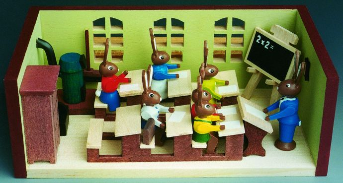
Die Osterferien sind vorbei und auch, wenn wir nicht wie Stups (der, dem immer alles schief geht) und die andern kleinen Hasen in die Schule dürfen, geht es doch weiter mit Mathe. Die Frage ist, erinnerst du dich noch an die Zeit vor den Ferien oder muss ich ein bisschen am Öhrchen ziehen, um der Erinnerung auf die Sprünge zu helfen?
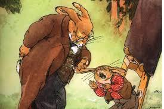
Da auch das sehr bewährte Ohren-lang-Ziehen im Distanzunterricht schwer umzusetzen ist, versuche ich es hier mit einem Erinnerungsquiz.
Bearbeite also folgendes Quiz. Solltest du bei einer Aufgabe Schwierigkeiten haben, lies nach, frag nach und versuch’ sie dann nochmal. Viel Spaß!
3.2.3 Baumdiagramme mit abhängigen Stufen
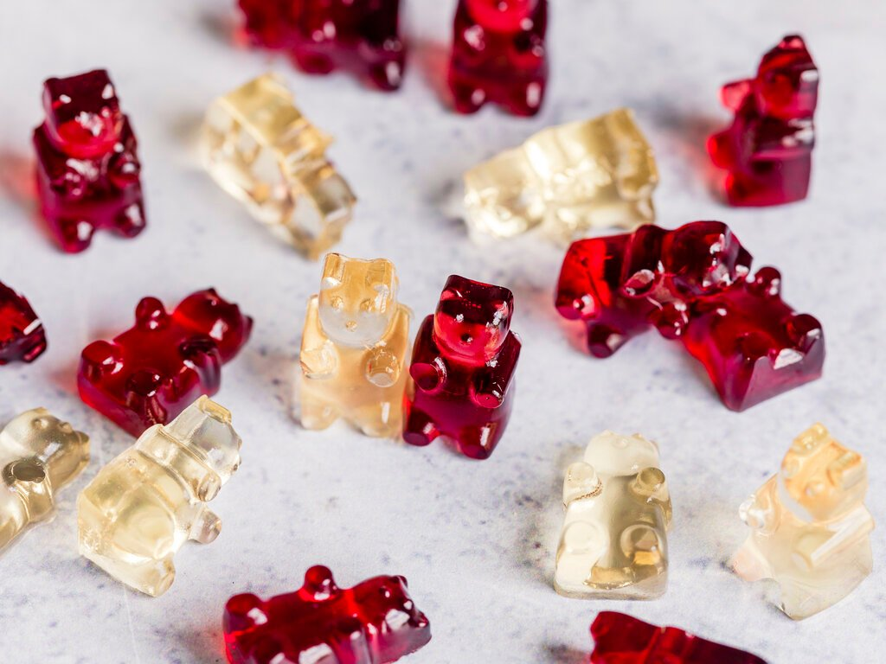
Erinnere dich an die letzte Aufgabe aus dem Quiz: Amelie hatte noch 7 rote und 5 weiße Gummibärchen in ihrer Tüte und hat nacheinander zufällig zwei Gummibärchen herausgeholt und aufgegessen. Die Wahrscheinlichkeit dafür, dass sie zwei rote Gummibärchen erwischt, war \(\frac{7}{12} \cdot \frac {6}{11} = \frac{7}{22}\). Warum?
(Denk mal kurz nach und lies erst weiter, wenn du die Lösung weißt…)
Genau. Wenn sie ein Gummibärchen herausgeholt und aufgegessen hat, sind auf jeden Fall nur noch elf Gummibärchen in der Tüte: Entweder sie hat ein rotes Gummibärchen aufgegessen, dann hat sie noch sechs rote und fünf weiße Gummibärchen. Oder sie hat ein weißes Gummibärchen aufgegessen, dann hat sie immer noch sieben rote, aber nur noch vier weiße Gummibärchen. In jedem Fall ändern sich die Wahrscheinlichkeiten auf der zweiten Stufe des Baumdiagramms. Und da sie sich in Abhängigkeit vom Ausgang des Zufallsexperiments in der ersten Stufe ändern (wenn hat’s erwischt? Ein weißes oder ein rotes Gummibärchen?), spricht man in diesem Fall spricht man von einem Baumdiagramm mit abhängigen Stufen.
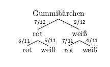
Ein weiterer Name für diese Art der Zufallsversuche ist “Experiment ohne Zurücklegen”. Das Gummibärchen wandert nicht wieder in die Tüte, sonst wären es ja nach wie vor 12 Gummibärchen.
Beachte:
Es gibt Zufallsexperimente mit und Zufallsexperimente ohne Zurücklegen.
Handelt es sich um ein Zufallsexperiment mit Zurücklegen, bleiben die Wahrscheinlichkeiten, die an den Pfaden notiert werden, auf allen Stufen des Baumdiagramms gleich. Beispiele sind: Mehrmaliges Würfeln (oder auch gleichzeitiges Würfeln mit mehreren Würfeln), wiederholtes Münzewerfen, wiederholtes Glücksraddrehen…
Handelt es sich um ein Zufallsexperiment ohne Zurücklegen, ändern sich die Wahrscheinlichkeiten, die an den Pfaden notiert werden, von Stufe zu Stufe. Beispiele sind: Lose, Kugeln, Karten, Schrauben oder Gummibärchen (oder sonst irgendwas) Ziehen, ohne dass die Lose, Kugeln, Karten, Schrauben oder Gummibärchen zurückgelegt werden.
Falls dir die Reihenfolge egal ist, dann kannst du die Lose, Kugeln, Karten etc. auch gleichzeitig ziehen, in eine beliebige Reihenfolge bringen und dann den Baum passend zu deiner Reihenfolge malen. Mit jeder beliebigen Reihenfolge wirst du die gleiche “End-” Wahrscheinlichkeit erhalten. Du kannst dir das vielleicht so vorstellen: Du schließt die Augen und ziehst hintereinander fünf Kugeln, Lose, egal was aus einer Urne. Zwischendurch wird nicht geblinzelt. Hinterher liegen fünf Kugel in einer Reihe vor dir. Wenn dich die Reihenfolge nicht interessiert, hättest du genauso gut alle fünf gleichzeitig ziehen und irgendwie anordnen können.
Beispiel
Aus einer Kiste mit fünf neuen und drei gebrauchten Pullis werden zwei Pullis entnommen. Ermittle die Wahrscheinlichkeit dafür, dass ein gebrauchter und ein neuer Pulli erwischt wurden. Zeichne dazu ein Baumdiagramm.
Beachte beim Zeichnen des Baumdiagramms, dass der erste Pulli nicht zurückgelegt wird!
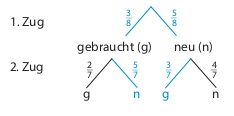
Man muss also folgende Fälle unterscheiden:
Der zuerst gezogene Pulli ist gebraucht. Dann gibt es noch zwei gebrauchte und fünf neue Pullis in der Kiste.
Der zuerst gezogene Pulli ist neu. Dann gibt es noch drei gebrauchte und vier neue Pullis in der Kiste.
Das Ereignis “einmal gebraucht und einmal neu” setzt sich also aus den beiden Fällen (Pfaden) gebraucht-neu (gn) und neu-gebraucht (ng) zusammen. Für die Wahrscheinlichkeit dieses Ereignisses gilt also:
\[\begin{align} P(E)&=P(gn)+P(ng)= \\ {}\\ &= \frac{3}{8}\cdot\frac{5}{7} + \frac{5}{8}\cdot\frac{3}{7} = \\ {}\\ &= \frac{15}{56} + \frac{15}{56} = \frac{15}{28} \approx 54\%\end{align}\]
Aufgabe 1
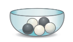
In einem Gefäß liegen drei weiße und zwei schwarze Kugeln. Zwei Kugeln werden nacheinander zufällig entnommen. Zeichne ein Baumdiagramm und berechne die Wahrscheinlichkeit dafür, dass zwei gleiche Kugeln gezogen werden,
- wenn die Kugeln zurückgelegt werden.
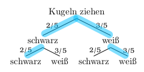
\(P(zwei\;gleiche\;Kugeln) = \frac{2}{5}\cdot\frac{2}{5} + \frac{3}{5} \cdot\frac{3}{5} = \frac{4}{25} + \frac{9}{25} = \frac{13}{25} = 52\%\)
- wenn die Kugeln nicht zurückgelegt werden.
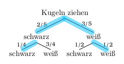
\[ P(zwei\;gleiche\;Kugeln) = \frac{2}{5}\cdot\frac{1}{4} + \frac{3}{5} \cdot\frac{1}{2} = \frac{1}{10} + \frac{3}{10} = \frac{4}{10} = 40\% \]
- Erkläre anschaulich, warum die Wahrscheinlichkeit in einem Fall größer ist.
Während bei der Version mit Zurücklegen die Anteile der weißen bzw. schwarzen Kugeln bei jeder Ziehung gleich bleiben (womit ja auch die im Baumdiagramm notierten Wahrscheinlichkeiten auf allen Stufen dieselben sind), verringert sich der Anteil der weißen (bzw. schwarzen) Kugeln mit jeder Ziehung einer weißen (bzw. schwarzen) Kugel von Stufen zu Stufe.
Aufgabe 2
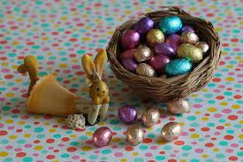
In einem Korb liegen 12 Schokoladen-Ostereier. Drei davon sind mit Marzipan. Franka entnimmt dem Korb zwei Schoko-Eier. Zeichne ein Baumdiagramm und berechne die folgenden Wahrscheinlichkeiten:

- Sie erwischt zwei Marzipan-Eier.
Möchte man die Wahrscheinlichkeit dafür berechnen, dass sie zwei Marzipan-Eier erwischt, muss man den gelb markierten Pfad betrachten:
\(P(zweimal\;Marzipan)= \frac{1}{4} \cdot \frac{2}{11} = \frac{1}{22} \approx 4,5\%\)
- Sie erwischt ein Marzipan-Ei und ein Schoko-Ei mit anderer Füllung.
Möchte man die Wahrscheinlichkeit dafür berechnen, dass sie ein Marzipan-Ei und ein Schoko-Ei mit anderer Füllung erwischt, muss man die grün markierten Pfade betrachten:
\(P(einmal\;Marzipan,\;einmal\;kein\;Marzipan)= \frac{3}{4} \cdot \frac{3}{11} + \frac{1}{4} \cdot \frac{9}{11} = \frac{18}{44} \approx 41\%\)
- Sie erwischt kein Marzipan-Ei.
Möchte man die Wahrscheinlichkeit dafür berechnen, dass sie kein Marzipan-Eier erwischt, muss man den orange markierten Pfad betrachten:
\(P(kein\;Marzipan)= \frac{3}{4} \cdot \frac{8}{11} = \frac{6}{11} \approx 54,5\%\)
Aufgabe 3
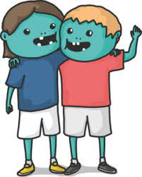
Eine Zombiballgruppe besteht aus 13 Mädchen und 12 Jungen. Es sollen zufällig zwei Kinder bestimmt werden, die dann jeweils ihre Mannschaften wählen dürfen. Berechne die Wahrscheinlichkeit dafür, dass ein Junge und ein Mädchen bestimmt werden. Zeichne zunächst ein Baumdiagramm.
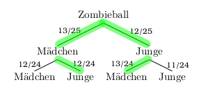
\(P(Junge\;\&\;Maedchen) = \frac{13}{25} \cdot \frac{12}{24} + \frac{12}{25} \cdot \frac{13}{24} = \frac{13}{25} \approx 52\%\)
Übungsaufgaben
Aufgabe 1
Drei Karten mit den Ziffern 2, 3 und 7 werden verdeckt gemischt. Anschließend wird eine Karte gezogen und aufgedeckt. Danach wird eine zweite Karte gezogen und hinter die erste Karte gelegt, so dass eine zweistellige Zahl entsteht.
- Zeichne ein Baumdiagramm. Welche zweistelligen Zahlen können entstehen? Wie groß ist die Wahrscheinlichkeit, dass die Zahl 37 entsteht?
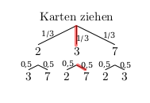
Folgende zweistellige Zahlen können entstehen: \(23,\;27,\;32,\;37,\;72,\;73\)
Die Wahrscheinlichkeit für die Zahl 37 ist:
\(P(37) = \frac{1}{3}\cdot\frac{1}{2}=\frac{1}{6} \approx 16,7\%\)
- Berechne die Wahrscheinlichkeit dafür, dass die entstandene Zahl durch 9 teilbar ist.
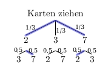
Durch 9 teilbar sind 27 und 72. Die Wahrscheinlichkeit für eine durch 9 teilbare Zahl ist also:
\(P(durch\;9\;teilbar)= \frac{1}{3}\cdot\frac{1}{2} + \frac{1}{3}\cdot\frac{1}{2} = \frac{2}{6} \approx 33,3\%\)
Aufgabe 2
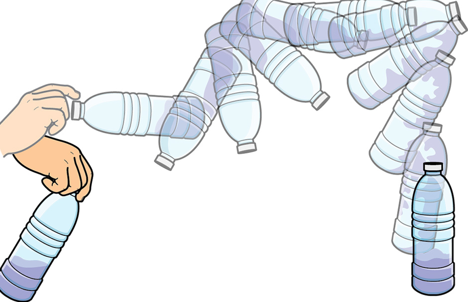
David übt den Bottle Flip. Dabei soll eine Wasserflasche so in die Luft geworfen werden, dass sie “im Stehen” (mit dem Flaschenboden auf dem Tisch) landet. Mit einer Wahrscheinlichkeit von 20% schafft David den Bottle Flip.
- Zeichne ein Baumdiagramm.
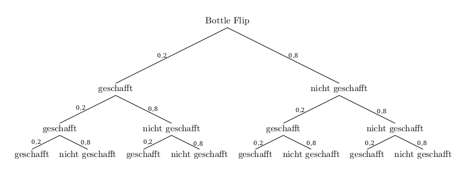
- Berechne die Wahrscheinlichkeit dafür, dass David den Bottle Flip dreimal hintereinander schafft.
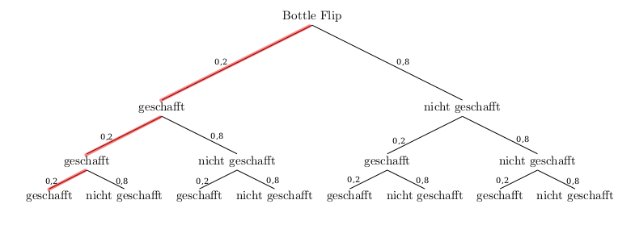
Die Wahscheinlichkeit dafür, dass David den Bottle Flip dreimal hintereinander schafft, erhält man, wenn man die Wahrscheinlichkeiten entlang des rot markierten Pfades multipliziert:
\(P(drei\;Bottle\;Flips\;hintereinander)=0,2 \cdot 0,2 \cdot 0,2 = 0,008 =0,8\%\)
- Berechne die Wahrscheinlichkeit dafür, dass die Flasche bei einem von drei Würfen stehen bleibt.
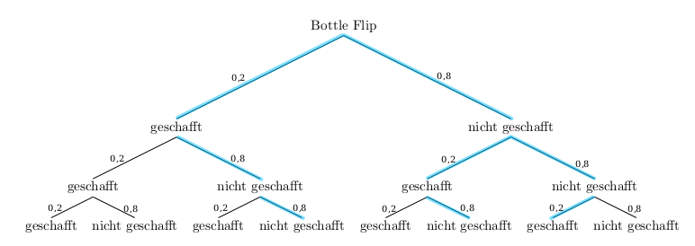
Die Wahscheinlichkeit dafür, dass bei einem von drei Würfen stehen bleibt, erhält man, wenn man die Wahrscheinlichkeiten entlang der hellblau markierten Pfade multipliziert und die Pfadwahrscheinlichkeiten addiert:
\(P(einer\;von\;drei\;Bottle\;Flips\;gelingt)= 3 \cdot 0,2 \cdot 0,8 \cdot 0,8 = 0,384 =38,4\%\)
- Berechne die Wahrscheinlichkeit dafür, dass die Flasche bei drei Würfen nicht zweimal nacheinander stehen bleibt.
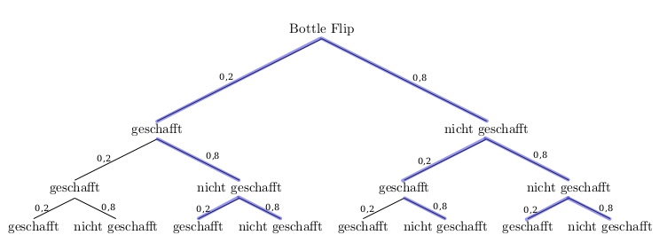
Die Wahscheinlichkeit dafür, dass die Flasche bei drei Würfen nicht zweimal nacheinander stehen bleibt, erhält man, wenn man die Wahrscheinlichkeiten entlang der blau markierten Pfade multipliziert und die Pfadwahrscheinlichkeiten addiert:
\[\begin{align} P(einer\;von\;drei\;Bottle\;Flips\;gelingt) &= 0,2 \cdot 0,2 \cdot 0,8 + 3 \cdot 0,2 \cdot 0,8 \cdot 0,8 + 0,8^3 = \\ &= 0,928 = 92,8\%\end{align}\]
- Nach einigem Üben wird David besser. Die Wahrscheinlichkeit für zwei erfolgreiche Bottle Flips hintereinander liegt jetzt bei 9%. Berechne die Wahrscheinlichkeit, dass ein Bottle Flip misslingt
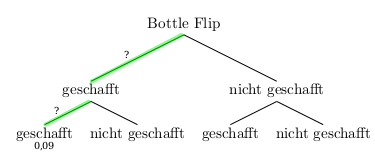
Aus der Wahrscheinlichkeit für zwei erfolgreiche Bottle Flips hintereinander kann man die Wahrscheinlichkeit für einen gelungenen Bottle Flip berechnen, denn es gilt
\[P(zwei\;gelungene\;Bottle\;Flips) = x \cdot x = 0,09\quad,\] wobei \(x\) die Wahrscheinlichkeit für einen gelungenen Bottle Flip ist.
[Bedenke: Die Wahrscheinlichkeit 0,09 ergibt sich, wenn man die unbekannten (aber gleich bleibenden) Wahrscheinlichkeiten entlang der hellgrün markierten Pfade multipliziert!]
Es gilt also: \(0,09 = x^2\)
Diese Gleichung löst man, indem man auf beiden Seiten die Wurzel zieht:
\[\begin{align} 0,09 & = x^2 \quad\quad|\sqrt{\;}\\ \sqrt{0,09} &= x \\ 0,3 &= x \\ 30\% &= x \end{align}\]
Wenn die Wahrscheinlichkeit dafür, dass ein Bottle Flip gelingt 30% ist, muss die Wahrscheinlichkeit dafür, dass ein Bottle Flip misslingt 70% sein, da die beiden Wahrscheinlichkeiten zusammen 100% ergeben müssen.
Die Wahrscheinlichkeit dafür, dass David ein Bottle Flip misslingt, beträgt also 70%.
Aufgabe 3
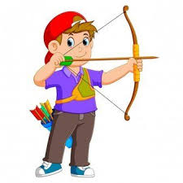
Ein Bogenschütze trifft beim ersten Schuss mit einer Wahrscheinlichkeit von 0,8. War der erste Versuch ein Treffer, so trifft der Schütze beim zweiten Versuch mit der gleichen Wahrscheinlichkeit. Geht der erste Schuss daneben, dann verringert sich die Treffsicherheit beim zweiten Versuch auf 0,7. Es wird zweimal geschossen.
- Zeichne ein Baumdiagramm.
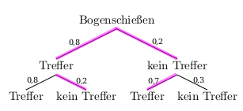
- Berechne die Wahrscheinlichkeit für genau einen Treffer.
Die Wahscheinlichkeit dafür, dass der Schütze genau einmal trifft, erhält man, wenn man die Wahrscheinlichkeiten entlang der pink markierten Pfade multipliziert und die Pfadwahrscheinlichkeiten addiert:
\(P(genau\;ein\;Treffer)= 0,8 \cdot 0,2 + 0,2 \cdot 0,7 = 0,3 = 30\%\)
Aufgabe 4
Niklas hat zwei Beutel mit Losen. Im ersten Beutel befinden sich zwei Nieten und ein Gewinn. Im zweiten Beutel gibt es drei Nieten und drei Gewinne. Es wird zufällig ein Beutel ausgewählt und aus diesem ein Los gezogen. Niklas überlegt: “Insgesamt gibt es vier Gewinne und neun Lose. Die Wahrscheinlichkeit für einen Gewinn ist also \(\frac{4}{9}\).”
Nimm Stellung. Zeichne dazu ein Baumdiagramm.
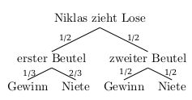
Zunächst wird zufällig ein Beutel gewählt. Dabei ist die Wahrscheinlichkeit für jeden der beiden Beutel 50%. Anschließend wird aus dem gewählten Beutel ein Los gezogen. Als Wahrscheinlichkeit für einen Gewinn ergibt sich also:
\(P(Gewinn) = \frac{1}{2} \cdot \frac{1}{3} + \frac{1}{2} \cdot \frac{1}{2} = \frac{5}{12} \approx 41,67\%\)
Damit ist die Wahrscheinlichkeit geringer als von Niklas angenommen (\(\frac{4}{9} \approx 44,4\%\)).
Da die beiden Beutel nicht den gleichen Inhalt haben, ist “alles zusammenwerfen” nicht dasselbe wie nicht zu wissen, aus welchem Beutel man überhaupt ziehen wird.
Aufgabe 5
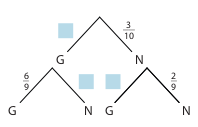
- Ergänze die fehlenden Wahrscheinlichkeiten im Baumdiagramm.
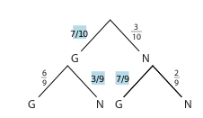
- Erfinde eine zum Baumdiagramm passende Aufgabenstellung.
In einer Lostrommel sind sieben Gewinne und drei Nieten. Anna zieht zwei Lose. Berechne die Wahrscheinlichkeit dafür, dass sie genau einen Gewinn zieht.